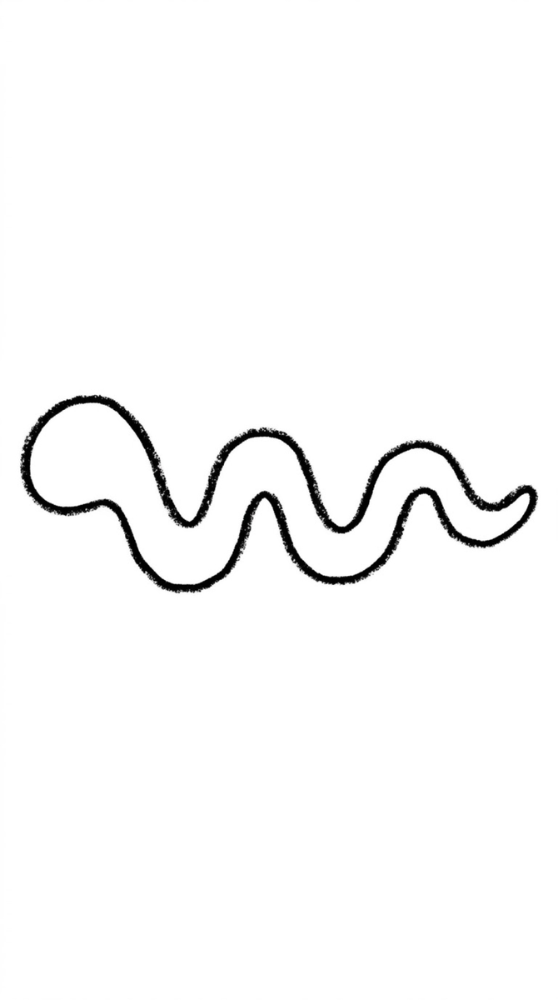
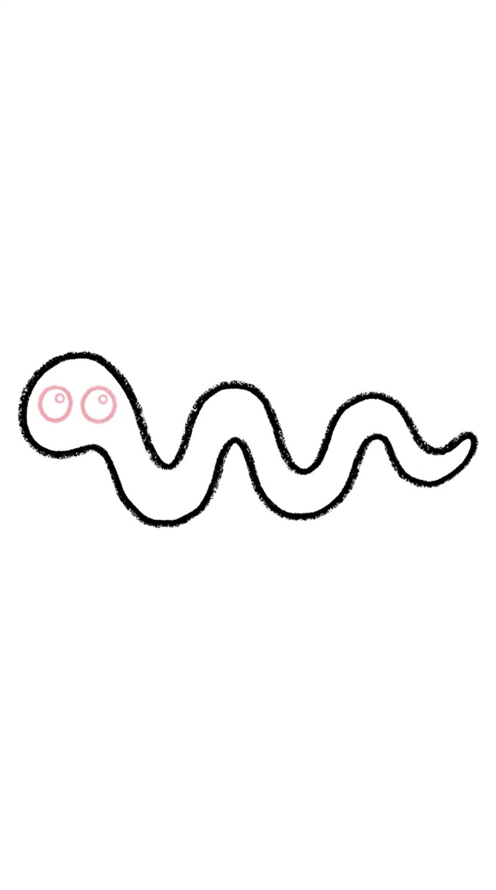
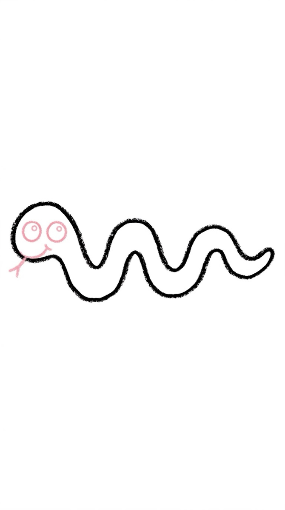
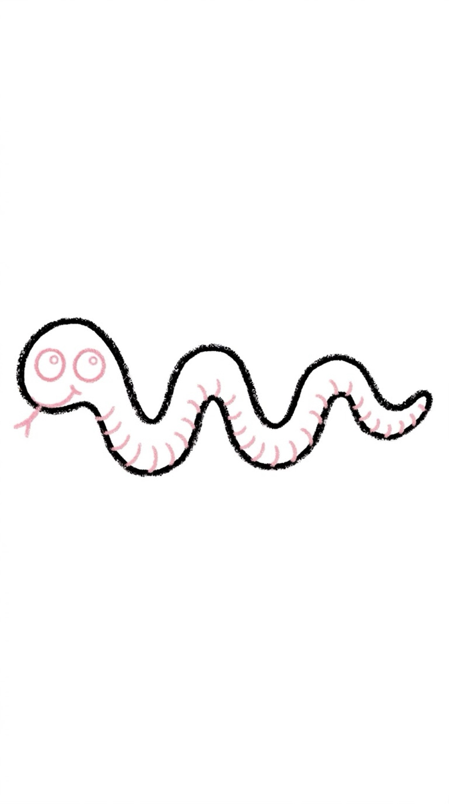
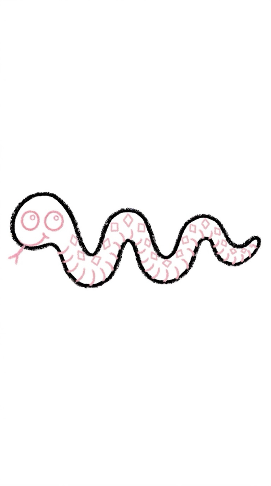
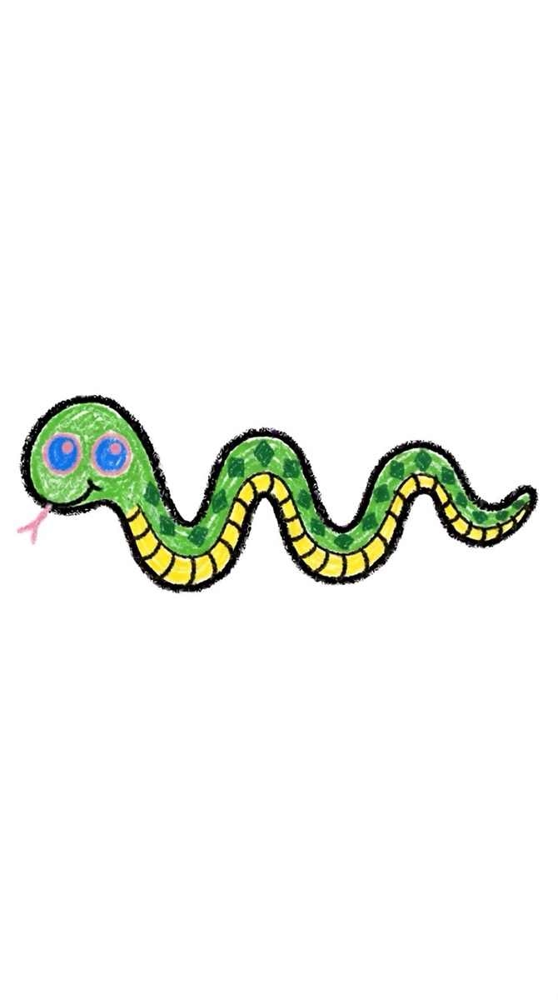

Snake Drawing for Kids How to Draw a Snake in 6 Easy Steps
Quick Answer
This free step-by-step tutorial shows kids how to draw a snake in six easy steps: a curvy S line, an oval head, eyes with a tongue, a wider body, a fun pattern, and color. Download the printable PDF, grab crayons, and follow along together. Made for ages 4 and up — no signup needed, just print and draw.
At a Glance
- Subject: How to draw a snake
- Ages: 3+
- Steps: 6 steps
- Time: ~10 min
- Difficulty: Easy
- Supplies: Paper, crayons
A snake is the most forgiving animal to draw — it's literally one wiggly line. There's no wrong way for a curve to bend, which makes this the perfect confidence-builder for kids who say 'I can't draw.'
✏️ How to Draw a Snake: Step by Step
One step per box — draw each new part in a different color so kids can see exactly what changed.
Step 1: The Wiggly Body

Draw one long, fat wiggly shape — like a sleepy worm curving across the page — pointy at one end for the tail. The wide rounded end is the head.
Step 2: The Eyes

Add two round eyes with tiny shine dots on the wide head end.
Step 3: Tongue and Smile

Draw a forked tongue flicking out — two tiny lines in a V — and a little smile under it.
Step 4: Belly Scales

Draw short curved lines across the underside of the body for belly scales.
Step 5: The Pattern

Add diamonds, stripes, or spots sitting on the back — real snakes have amazing patterns.
Step 6: Color It In

Color it green, yellow, or rainbow — the wilder the pattern, the cooler the snake!
📊 Snake Drawing by Age
Every age can join in — just adjust the job.
| Age | What they can do | Tip |
|---|---|---|
| 3–4 | Draw the wiggly S line and color it | The S is the whole drawing at this age — celebrate the wiggle |
| 4–5 | Draw the S, head, and tongue with help | The forked tongue is just a V — practice it in the air first |
| 6+ | Draw the whole snake solo | Challenge: draw the snake wrapped around a tree branch |
🖨️ Download Your Free Snake Drawing Printable
The printable lays out all 6 steps one per box, big enough for little hands — kids draw right alongside each step.
⬇️ Open Free Printable 🖨️ Print🎁 Free printable for ages 3+
🐍 Jungle Slither Track
Draw a long wiggly path across a big page and let your snake follow it — add leaves, rocks, and a second tiny snake racing it. The path IS the drawing here, so kids who struggle with 'things' discover they're great at 'lines.' Every kid can draw a great snake.
What You'll Need to Draw a Snake
Green is classic, but snakes can be any color — let your kid go wild with rainbow stripes. The long wavy body is the whole tutorial, so pick a crayon that glides smoothly. Black for the eye and tongue. Long paper (or taping two sheets together) gives the snake room to really stretch out — it's frustrating to run out of space mid-wiggle.
What They're Learning
The snake's S-curve body is the longest continuous line in any of these tutorials — it builds serious hand control to keep it smooth without lifting the crayon. Varying the curve width (thick in the middle, thin at the tail) introduces line weight intuitively. The forked tongue (two tiny lines splitting) is also delightfully precise work for little fingers.
Make It Yours
Add diamond patterns, stripes, or spots along the body — real snakes have amazing markings to copy. Coil it into a spiral, make it climb a tree branch, or draw it peeking out of tall grass with just the head showing. A rattlesnake with a segmented tail rattle is a fun variation, or try a cobra with the flared hood.
🛒 Our Favorite Drawing Supplies
These are the supplies we reach for in our own home — washable (because kids), quality paper, and enough colors to avoid fights.
As an Amazon Associate, MomYouNeedThis earns from qualifying purchases — at no extra cost to you.
🐍 How to Draw a Snake
Learning how to draw a snake is surprisingly easy: it is just a wavy line with a head. Draw an S-shaped body, add a triangle head at one end, and the snake appears. Kids who learn how to draw a snake love how fast it comes together.
When you practice how to draw a snake, the pattern is the fun part: stripes, diamonds, or spots along the body. A tongue flicking out of the mouth makes it look alive.
Follow the tutorial on this page: wavy body, head, pattern, tongue. That is how to draw a snake — and it makes a great slithery picture.
See free snake printable for more. The jungle floor pairs well with the treetops: try how to draw a monkey next, or the garden’s quiet hunter in how to draw a frog.
❓ Snake Drawing FAQs
What is the easiest way for a kid to draw a snake?
Draw a big wiggly S across the page. Add an oval head at one end with two eyes and a forked tongue, then draw a second S alongside the first to widen the body. Decorate with diamonds or stripes. It's one line plus decorations.
What age can kids start learning to draw a snake?
Even 3-year-olds can draw a wiggly S, so this is the most accessible animal tutorial. Most kids manage the head and tongue around age 4, and the full snake solo by 5 or 6.
What supplies do we need to draw a snake?
Paper and crayons or markers — greens and yellows are classic, but rainbow snakes are the most fun. The free printable PDF lays out all six steps one per box so kids can draw right alongside each step.
Is the snake drawing printable really free?
Yes — every printable on MomYouNeedThis is 100% free to download and print. No signup, no payment, just tap the download button.
How do I print the snake drawing tutorial?
Open the PDF and print at 100% scale (not 'fit to page') so the drawing boxes stay big enough for little hands. The printable is designed to stay large — never shrunk to force a fit.
What is the easiest way for how to draw a snake?
Draw an S-shaped wavy body, add a triangle head, then stripes or spots and a forked tongue. That is how to draw a snake.
📚 Keep Exploring
- ✏️ All 76 Drawing Tutorials 76 free step-by-step drawing tutorials for kids.
- 🐾 Animal Coloring Free printable animal coloring pages for little learners.
- ✏️ Drawing Practice Free printable drawing pre-writing worksheet for toddlers.